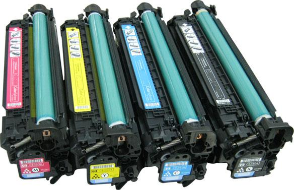
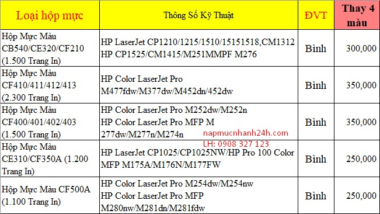
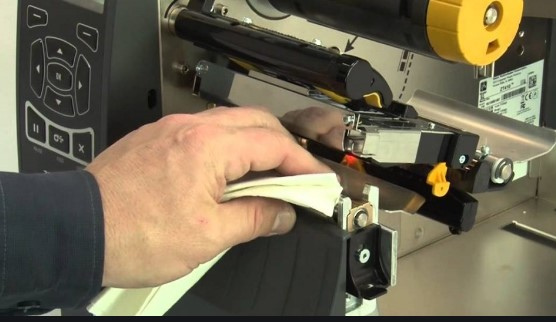

Nạp Mực Máy In Laser Màu Tận Nơi Tại TPHCM – Giá Rẻ, Có Mặt Nhanh

Dịch vụ nạp mực máy in laser màu tại TPHCM của Trường Phát chuyên bơm mực cho các dòng máy in HP, Canon, Brother, Samsung… Kỹ thuật viên có mặt tận nơi chỉ sau 20 – 30 phút tại các quận nội thành.
Chúng tôi nhận nạp mực máy in màu tận nơi khi máy in gặp các tình trạng như: bản in mờ, thiếu màu, in sọc, máy báo hết mực hoặc không nhận hộp mực. Dịch vụ hỗ trợ tận nơi cho văn phòng, công ty, cửa hàng với chi phí hợp lý và bảo hành rõ ràng.
Ngoài ra chúng tôi còn cung cấp các dịch vụ như sửa máy in tận nơi, nạp mực máy in laser và cho thuê máy photocopy phục vụ cho văn phòng, công ty tại TP.HCM.
Dịch Vụ Nạp Mực Máy In Laser Màu Tận Nơi
Máy in màu laser là dòng máy được sử dụng phổ biến tại các văn phòng nhờ khả năng in nhanh và chất lượng bản in sắc nét. Khi máy in hết mực, người dùng có thể lựa chọn hai phương án:

Phương án 1: Nạp mực máy in
Đây là giải pháp tiết kiệm chi phí nhất và được nhiều doanh nghiệp lựa chọn. Tùy theo loại mực và dòng máy, giá nạp mực thường dao động từ 250.000 – 450.000 đồng / 1 màu. Lưu ý rằng đối với máy in laser màu, mỗi lần nạp mực cần thay chip mực để máy nhận mức mực mới.
Phương án 2: Thay hộp mực mới (cartridge)
Thay nguyên cụm hộp mực giúp máy hoạt động ổn định hơn nhưng chi phí cao hơn nhiều, thường khoảng 650.000 – 1.250.000 đồng / màu tùy model máy.
Các Dấu Hiệu Cần Nạp Mực Máy In Laser Màu
- Bản in bị mờ hoặc nhạt màu
- Máy in ra thiếu màu hoặc sai màu
- Bản in xuất hiện sọc ngang hoặc sọc dọc
- Máy in báo lỗi toner hoặc replace toner
- Máy in ra giấy trắng
- Máy báo hết mực nhưng vẫn còn mực trong hộp
Nếu gặp các tình trạng trên, bạn nên kiểm tra và nạp mực máy in kịp thời để tránh làm hỏng trống và linh kiện bên trong hộp mực.
Bảng Giá Nạp Mực Máy In Laser Màu
| Dịch vụ | Giá tham khảo |
|---|---|
| Nạp mực máy in màu HP | 250k – 450k |
| Nạp mực máy in Canon màu | 250k – 450k |
| Nạp mực máy in Brother màu | 250k – 450k |
| Thay chip mực | 50k – 120k |
Mức giá có thể thay đổi tùy theo model máy, loại mực sử dụng và tình trạng hộp mực.
Nạp Mực Máy In Laser Màu Theo Hãng
Nạp mực máy in màu HP
HP là dòng máy in phổ biến tại các văn phòng nhờ độ bền cao và chất lượng in ổn định. Chúng tôi nhận nạp mực cho các dòng HP Color LaserJet với mực tương thích chất lượng cao giúp bản in sắc nét và ổn định.
Nạp mực máy in màu Canon
Canon nổi bật với khả năng in màu đẹp và ổn định. Dịch vụ nạp mực Canon tại Trường Phát sử dụng mực tương thích chất lượng giúp máy hoạt động ổn định và kéo dài tuổi thọ hộp mực.
Nạp mực máy in màu Brother
Máy in Brother thường được sử dụng trong doanh nghiệp nhờ chi phí vận hành thấp. Chúng tôi nhận nạp mực Brother tận nơi và kiểm tra toàn bộ hộp mực trước khi nạp.
Nạp mực máy in màu Samsung
Samsung là dòng máy in laser màu có thiết kế nhỏ gọn, phù hợp cho văn phòng nhỏ. Dịch vụ nạp mực Samsung giúp máy hoạt động ổn định và tiết kiệm chi phí so với việc thay hộp mực mới.
Quy Trình Nạp Mực Máy In Laser Màu
- Kiểm tra tổng thể hộp mực bằng phương pháp thủ công
- Kiểm tra tiếp xúc điện tử và in test để xác định tình trạng hộp mực
- Vệ sinh hộp mực, hút sạch mực thừa và làm sạch linh kiện
- Bơm mực mới vào khoang chứa mực
- Kiểm tra và lắp ráp hoàn thiện
- In test để kiểm tra chất lượng bản in
Mực in sử dụng là loại chất lượng cao, giúp bản in rõ nét và đạt gần đúng số trang in theo tiêu chuẩn của nhà sản xuất.
Cam Kết Dịch Vụ Nạp Mực Máy In

- Báo giá rõ ràng trước khi thực hiện
- Mực in chất lượng cao, bản in sắc nét
- Bảo hành bản in sau khi nạp mực
- Hỗ trợ kỹ thuật tận nơi nhanh chóng
- Vệ sinh máy in miễn phí khi nạp mực
Khu Vực Nạp Mực Máy In Tại TPHCM
- Nạp mực máy in quận 1
- Nạp mực máy in quận 3
- Nạp mực máy in quận 10
- Nạp mực máy in Tân Bình
- Nạp mực máy in Bình Thạnh
- Nạp mực máy in Phú Nhuận
Câu Hỏi Thường Gặp Khi Nạp Mực Máy In
Nạp mực máy in laser màu giá bao nhiêu?
Giá nạp mực máy in màu thường từ 250.000 – 450.000 đồng cho mỗi màu tùy theo dòng máy và loại mực sử dụng.
Bao lâu cần nạp mực lại?
Tùy theo tần suất sử dụng, thông thường sau khoảng 1.500 – 2.500 trang in thì cần nạp mực lại.
Nạp mực có ảnh hưởng đến máy in không?
Nếu thực hiện đúng kỹ thuật và sử dụng mực chất lượng, việc nạp mực hoàn toàn không ảnh hưởng đến máy in.
Liên Hệ Nạp Mực Máy In Laser Màu
TRUNG TÂM MỰC IN TRƯỜNG PHÁT
Hotline: 0908 327 123
👉 Máy in hết mực, in mờ hoặc báo lỗi mực? Hãy liên hệ ngay để kỹ thuật viên kiểm tra và hỗ trợ tận nơi nhanh chóng.
Cần nạp mực hoặc sửa máy in tận nơi? Mực In Trường Phát có mặt trong 30 phút tại TP.HCM — in test trước khi tính tiền, bảo hành 1 tháng.
0908.327.123 · 0819.007.394 (Zalo cả 2 số)